Adaptation Strategies
EES 4760/5760
Agent-Based and Individual-Based Computational Modeling
J. Magnolia Gilligan
Class #13: Monday, October 12, 2026
Getting Started
- Sit with your team partners
- Download model:
- https://ees4760.jmgilligan.org/models/class_13/business-investor.nlogox
- or go to Downloads page,
- select “Adaptation Strategies” page,
- and download Business Investor model.
Subsetting
Subsetting
Open the BusinessInvestor model in NetLogo
Click
setupTurn all the turtles red and the patches black
Turn
turtle 5yellow and move it topatch 0 0-
Ask
turtle 5to identify all the patches that are exactly 2 patches away from the turtle’s patch (not a 2-patch radius fromturtle 5)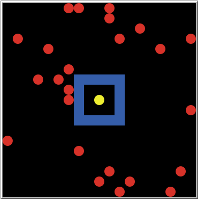
Hints:
- There are many ways to do this. Let’s look at a way to do this with
the
neighborsprimitive. - Hints:
- Use
member?primitive (member? <agent> <agent-set>) - Use
patch-setprimitive to turn an list of many patch-sets into a single patch-set
- Use
- Suggestion:
- Start by turning all neighbor patches (patches exactly 1 patch away) blue
- Next turn all patches within 2 patches blue
- Now turn all patches black again
- Now turn all patches within a 2-patch distance blue except the turtle’s patch
- Now turn all patches black again
- Now turn all patches within a 2-patch distance blue except the turtle’s patch and the patches 1 patch away.
A solution
ask turtle 5 [
ask (patch-set [neighbors] of [neighbors] of self) with
[not member? self [(patch-set neighbors patch-here)] of myself]
[
set pcolor blue
]
]- What does
selfrefer to in(patch-set [neighbors] of [neighbors] of self)?selfrefers toturtle 5ask turtle 5 [ ... ]puts the[...]in the context ofturtle 5, soselfrefers toturtle 5
- What does
selfrefer to innot member? self [(patch-set neighbors patch-here)] of myself?selfrefers to the various patches in thepatch-set:(patch-set [neighbors] of [neighbors] of self)x with [...], wherexis anagent-setevaluates[...]for each of the agents (patches, turtles, links) inx, soselfin the[...]refers, in turn, to each patch in thepatch-set
- What does
myselfrefer to innot member? self [(patch-set neighbors patch-here)] of myself?myselfrefers toturtle 5myselfrefers to the agent doing the asking
Self vs. Myself
to test-self-myself
ask turtle 5
[
ask turtle 7
[
print (word "first self = " self)
print (word "first myself = " myself)
ask turtle 2
[
print (word "second self = " self)
print (word "second myself = " myself)
]
]
]
endobserver> test-self-myself
first self = (turtle 7)
first myself = (turtle 5)
second self = (turtle 2)
second myself = (turtle 7)selfrefers to the agent being asked.myselfrefers to the agent doing the asking.- First:
turtle 5is askingturtle 7to do something.selfisturtle 7,myselfisturtle 5
- Second:
turtle 7is askingturtle 2to do something.selfisturtle 2,myselfisturtle 7
Telemarketer Model
Telemarketer Model
- Telemarketing firms interact
- Telemarketer calls patches
- If patch has received a previous call that tick, it hangs up
- If patch has not received a previous call that tick, it buys something
- Interaction is indirect, mediated by patches
- Accounting:
- Net profit = 2 × sales − 50 × size
- If balance < 0, firm goes bankrupt
- Growth
- If balance > growth threshold, firm increases size proportional to excess balance
Results
Results
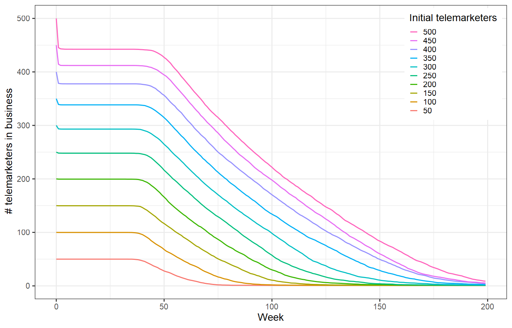
Variation
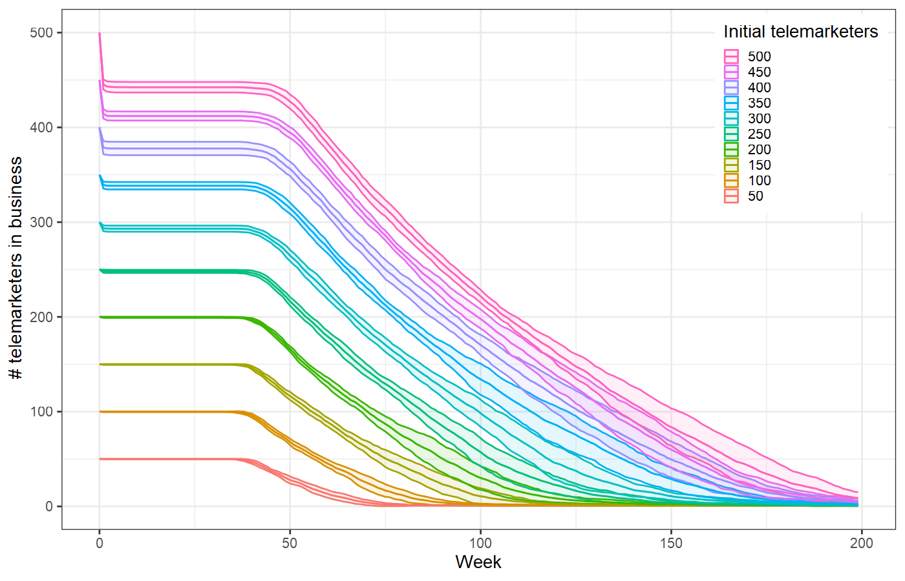
Median Weeks in Business
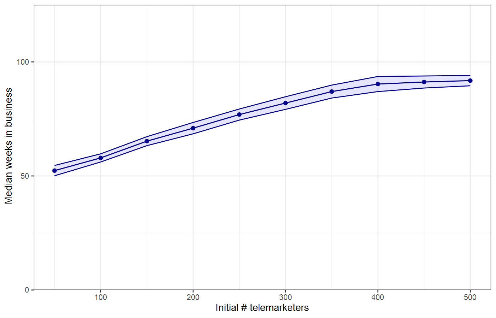
How to Calculate Median Weeks in Business?
- There are 50–500 telemarketers (turtles)
- What happens when a telemarketer goes out of business?
- What do you need, to calculate a median?
- We need a list of how long each turtle survives
- Use NetLogo
listprimitive in a global variable - How do you figure out the age of a turtle in this model?
- How might we update the list? (Hint: consult the NetLogo
dictionary)
- You may want to use the
replace-itemprimitive
- You may want to use the
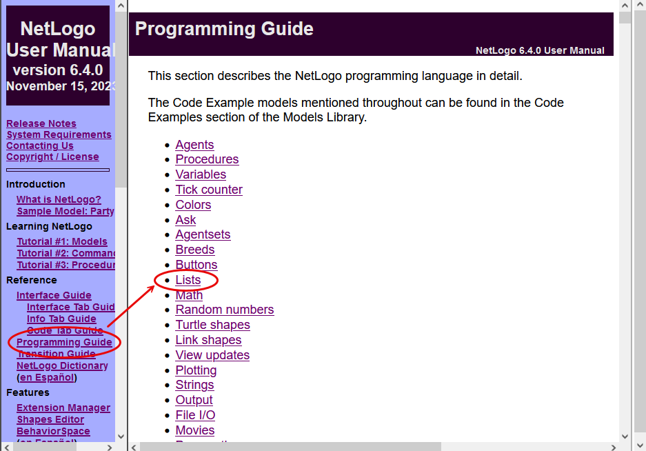
- See the “Lists” section in the NetLogo Programming Guide in the User Manual for more guidance on how to update lists.
Mergers
Mergers
- Instead of going bankrupt when the bank balance drops below 0, firms
look for acquisition partner
- Find a company that’s bigger and has enough money to pay off deficit.
- If it finds a parent, parent pays off deficit (child firm ends up with 0 balance)
- In future turns, child pays parent 50% of its net profits.
- In future, if child’s balance becomes negative:
- If parent has enough money, it pays child’s deficit
- If parent does not have enough money, child dies.
Results
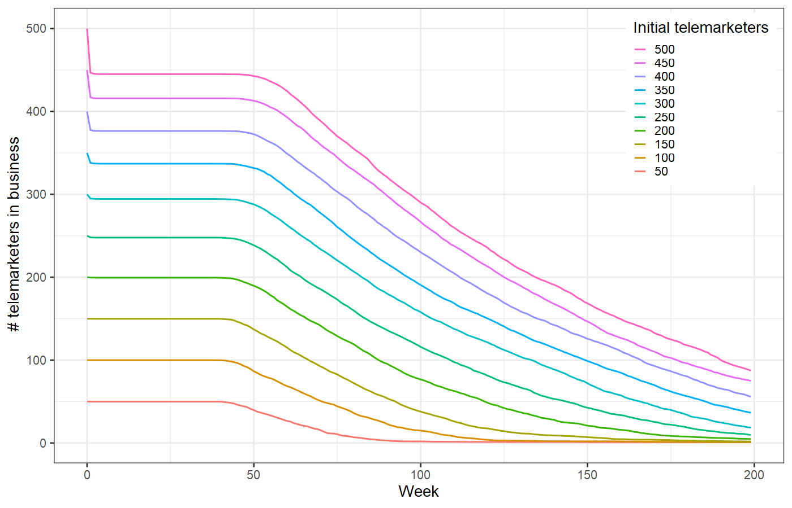
Variation
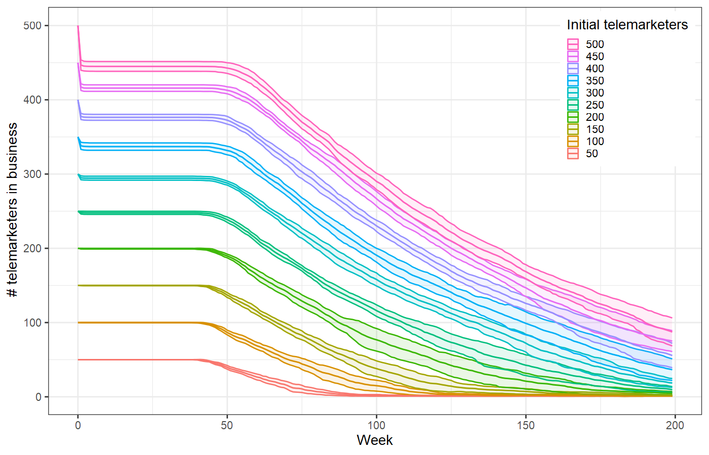
Median Weeks in Business
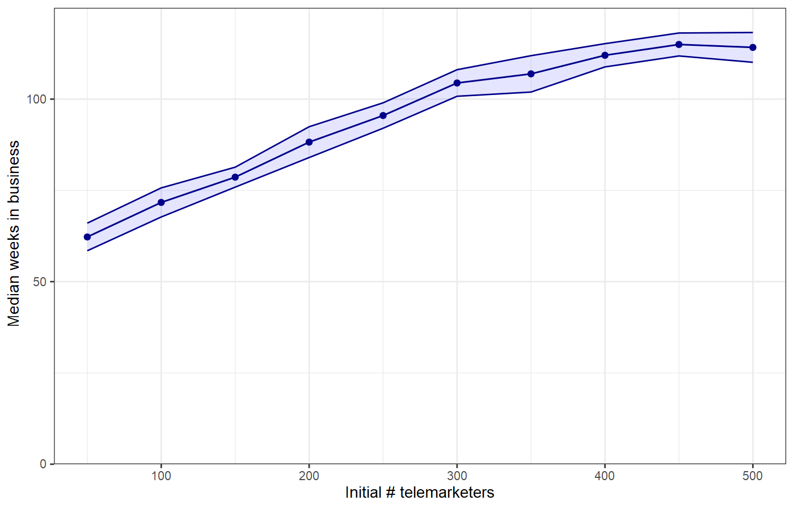
Comparisons
Progression
No Mergers
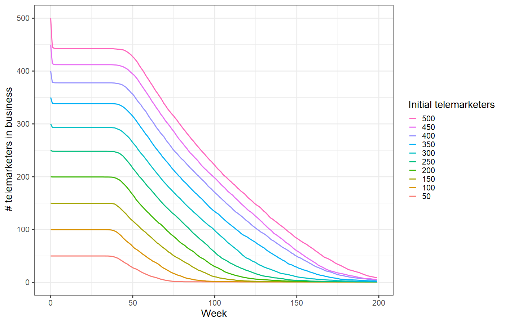
Mergers
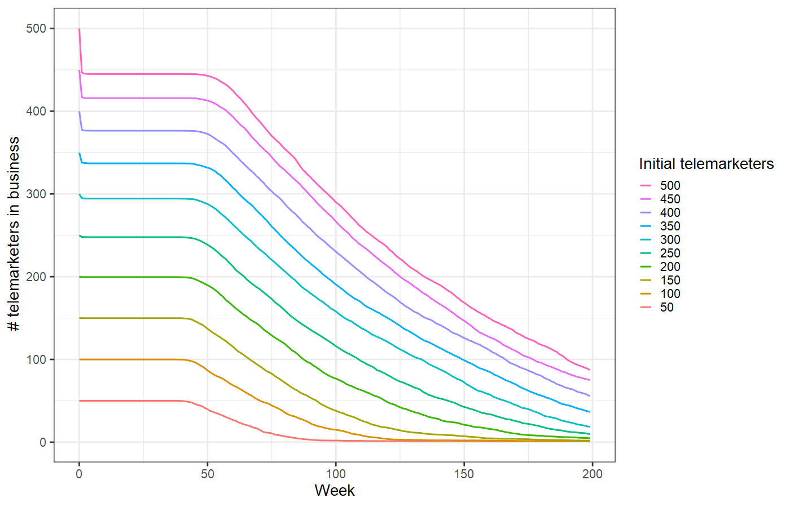
Variation
No Mergers
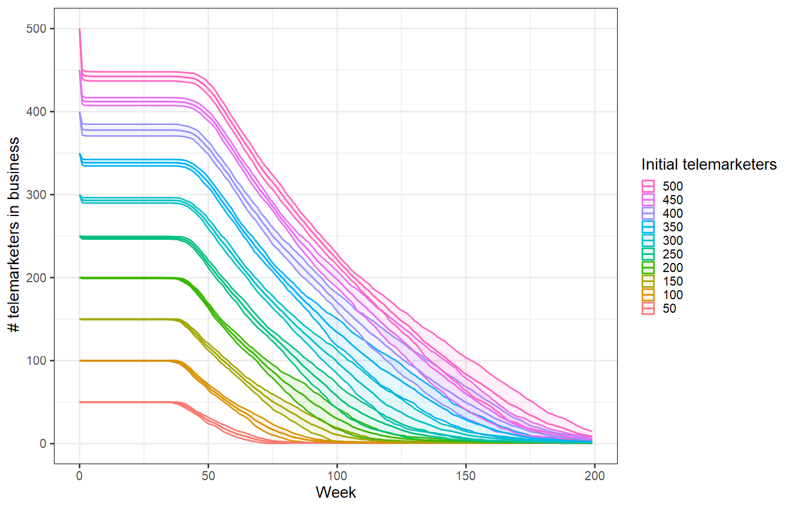
Mergers
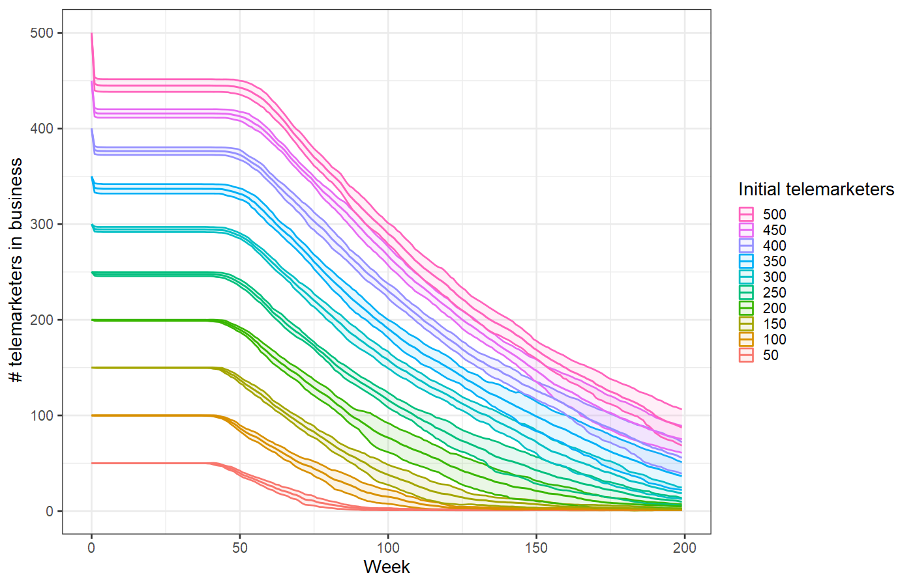
Weeks in Business
No Mergers

Mergers